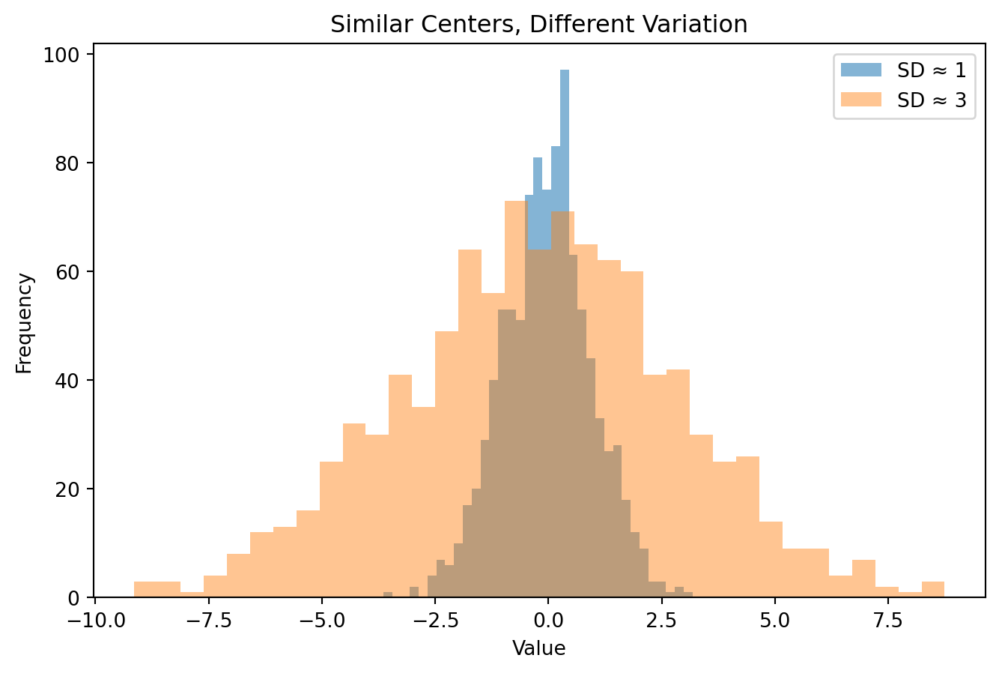
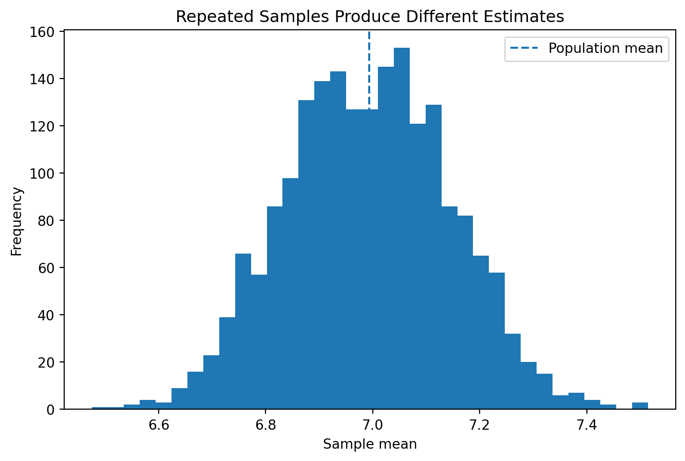
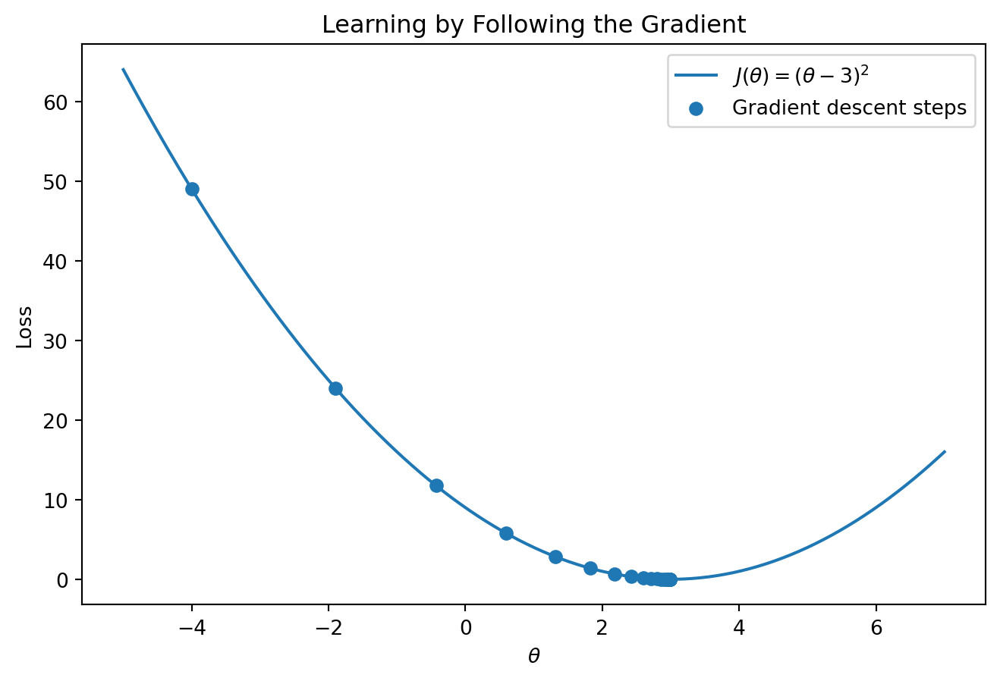

import numpy as np
scores = np.array([72, 75, 81, 84, 88, 90, 95])
scores.mean()np.float64(83.57142857142857)By the end of this chapter, you should be able to:
Machine learning can be used by calling library functions without understanding the mathematics underneath them. But technical fluency becomes much deeper when we can explain why an algorithm behaves as it does.
Statistics helps us reason about variation, uncertainty, sampling, and relationships. Linear algebra gives us a compact language for representing many observations and features at once. Calculus helps us understand how model parameters can be adjusted to reduce error. Optimization connects those ideas to learning.
This chapter is therefore not a detached mathematics review. Every concept will follow a recurring path:
\[ \boxed{\text{Intuition}} \rightarrow \boxed{\text{Equation}} \rightarrow \boxed{\text{Python}} \rightarrow \boxed{\text{Machine Learning Application}}. \]
Suppose our data contain \(n\) observations and \(p\) features. We can represent the feature matrix as
\[ X = \begin{bmatrix} x_{11} & x_{12} & \cdots & x_{1p}\\ x_{21} & x_{22} & \cdots & x_{2p}\\ \vdots & \vdots & \ddots & \vdots\\ x_{n1} & x_{n2} & \cdots & x_{np} \end{bmatrix} \in \mathbb{R}^{n \times p}. \]
The target can be represented as
\[ y = \begin{bmatrix} y_1\\ y_2\\ \vdots\\ y_n \end{bmatrix}. \]
This notation is not merely decorative. It allows us to describe entire learning algorithms compactly.
Consider a sample \(x_1,\ldots,x_n\).
The sample mean is
\[ \bar{x} = \frac{1}{n}\sum_{i=1}^{n}x_i. \]
import numpy as np
scores = np.array([72, 75, 81, 84, 88, 90, 95])
scores.mean()np.float64(83.57142857142857)The mean is a useful summary, but it does not reveal the entire distribution.
Sample variance is
\[ s^2 = \frac{1}{n-1}\sum_{i=1}^{n}(x_i-\bar{x})^2. \]
The sample standard deviation is
\[ s = \sqrt{s^2}. \]
sample_variance = np.var(scores, ddof=1)
sample_sd = np.std(scores, ddof=1)
sample_variance, sample_sd(np.float64(67.61904761904763), np.float64(8.223080178318076))Variance measures squared dispersion; standard deviation returns that dispersion to the original measurement units.
import matplotlib.pyplot as plt
rng = np.random.default_rng(42)
narrow = rng.normal(loc=0, scale=1, size=1000)
wide = rng.normal(loc=0, scale=3, size=1000)
plt.figure(figsize=(8, 5))
plt.hist(narrow, bins=35, alpha=0.55, label="SD ≈ 1")
plt.hist(wide, bins=35, alpha=0.45, label="SD ≈ 3")
plt.xlabel("Value")
plt.ylabel("Frequency")
plt.title("Similar Centers, Different Variation")
plt.legend()
plt.show()
Variation matters in ML because algorithms respond not only to where variables are centered but also to their scales and distributions.
For an event \(A\),
\[ 0 \le P(A) \le 1. \]
If \(A\) and \(B\) are events, conditional probability is
\[ P(A\mid B)=\frac{P(A\cap B)}{P(B)}, \qquad P(B)>0. \]
Conditional reasoning appears throughout machine learning. A classifier may estimate a probability such as
\[ P(Y=1\mid X=x). \]
That is a statement about uncertainty conditional on the information represented by \(x\).
For a discrete random variable \(X\),
\[ E[X] = \sum_x xP(X=x). \]
Expected value is a probability-weighted average. Many machine-learning objectives can be interpreted as attempts to minimize expected loss.
A probability distribution describes how probability is allocated across possible values of a random variable. SciPy provides extensive tools for continuous and discrete probability distributions as well as sample statistics and statistical tests (SciPy Community 2026).
Common distributions we will encounter include:
from scipy.stats import norm
probability = norm.cdf(1.96) - norm.cdf(-1.96)
probabilitynp.float64(0.950004209703559)The code computes the probability that a standard normal random variable falls between -1.96 and 1.96.
The important lesson is not memorizing 1.96. It is understanding that probability models provide mathematical representations of uncertainty.
Suppose we want to know the mean sleep duration of a target population.
The population is the full set of units about which we want to make a statement.
A sample is the subset observed.
A parameter is a population quantity such as \(\mu\).
A statistic is a sample quantity such as \(\bar{x}\).
We use statistics to learn about parameters, but the statistic changes from sample to sample.
rng = np.random.default_rng(42)
population = rng.normal(loc=7.0, scale=1.5, size=100_000)
sample_means = []
for _ in range(2000):
sample = rng.choice(population, size=100, replace=True)
sample_means.append(sample.mean())
plt.figure(figsize=(8, 5))
plt.hist(sample_means, bins=35)
plt.axvline(np.mean(population), linestyle="--", label="Population mean")
plt.xlabel("Sample mean")
plt.ylabel("Frequency")
plt.title("Repeated Samples Produce Different Estimates")
plt.legend()
plt.show()
The same sampling process does not produce exactly the same estimate every time.
For an independent sample, the estimated standard error of the mean is commonly written
\[ SE(\bar{x}) = \frac{s}{\sqrt{n}}. \]
As \(n\) grows, the standard error generally becomes smaller, all else equal.
But large samples do not automatically solve poor measurement, biased sampling, leakage, confounding, or dataset shift.
Statistics and machine learning may use the same data and even the same models while asking different questions. In particular, explanatory and predictive modeling pursue distinct goals and can imply different modeling choices (Shmueli 2010).
Prediction: How accurately can information in (X) predict (Y) for observations not used to fit the model?
Statistical inference: What does the observed sample permit us to conclude about a population parameter or relationship?
Causal inference: What would happen to (Y) if we intervened to change (X)?
\[ \boxed{\text{Prediction}\neq\text{Statistical Inference}\neq\text{Causal Inference}} \]
A model can predict well even when individual coefficients are difficult to interpret. Conversely, a precisely estimated association may add little predictive value. The evidence required depends on the claim.
Correlated predictors can preserve predictive signal while making allocation of that signal across individual coefficients unstable.
The model can retain useful predictive information while repeated samples redistribute the apparent contribution between (x_1) and (x_2).
\[ \boxed{\text{Stable prediction}\not\Rightarrow\text{stable interpretation of every parameter}} \]
Covariance describes how two variables vary together:
\[ \operatorname{Cov}(X,Y) = \frac{1}{n-1} \sum_{i=1}^{n} (x_i-\bar{x})(y_i-\bar{y}). \]
Correlation standardizes covariance:
\[ r_{XY} = \frac{\operatorname{Cov}(X,Y)}{s_Xs_Y}. \]
For Pearson correlation,
\[ -1 \le r \le 1. \]
study_hours = np.array([2, 3, 5, 6, 8, 9])
exam_score = np.array([61, 66, 74, 78, 88, 92])
np.corrcoef(study_hours, exam_score)[0, 1]np.float64(0.999252397692809)Correlation can be useful for exploration, feature analysis, and understanding redundancy. It does not establish causation.
A standard score is
\[ z_i=\frac{x_i-\bar{x}}{s}. \]
In machine-learning implementations, scaling statistics should be learned from the training data and then applied to later data. scikit-learn’s StandardScaler centers features and scales them using statistics learned during fit (scikit-learn developers 2026).
from sklearn.preprocessing import StandardScaler
X_scale_demo = np.array([
[18, 22000],
[25, 48000],
[40, 76000],
[55, 110000]
])
scaler = StandardScaler()
X_scaled = scaler.fit_transform(X_scale_demo)
X_scaledarray([[-1.15736053, -1.28397747],
[-0.66635909, -0.48913427],
[ 0.38578684, 0.3668507 ],
[ 1.43793278, 1.40626103]])Why can scaling matter? Many learning objectives depend on distances, dot products, gradients, or regularization. A feature whose numerical scale is orders of magnitude larger than another can disproportionately influence such calculations. scikit-learn explicitly notes this issue for algorithms involving RBF kernels and L1/L2 regularization (scikit-learn developers 2026).
NumPy provides operations for dot products, matrix multiplication, norms, decompositions, and other linear-algebra routines (NumPy Developers 2026).
A feature vector for observation (i) might be
\[ x_i = \begin{bmatrix} x_{i1}\\x_{i2}\\x_{i3} \end{bmatrix}. \]
A coefficient vector might be
\[ \beta = \begin{bmatrix} \beta_1\\\beta_2\\\beta_3 \end{bmatrix}. \]
Their dot product is
\[ x_i^\top\beta = \sum_{j=1}^{p}x_{ij}\beta_j. \]
x = np.array([2.0, 5.0, 1.5])
beta = np.array([0.8, -0.2, 1.1])
np.dot(x, beta)np.float64(2.25)This operation appears throughout linear models, neural networks, similarity calculations, and many other methods.
For many observations,
\[ \hat{y}=X\beta. \]
X_demo = np.array([
[1.0, 2.0],
[1.0, 4.0],
[1.0, 6.0]
])
beta = np.array([3.0, 1.5])
X_demo @ betaarray([ 6., 9., 12.])The same equation produces predictions for all observations at once.
For vectors \(x\) and \(z\), Euclidean distance is
\[ d(x,z) = \sqrt{\sum_{j=1}^{p}(x_j-z_j)^2}. \]
x = np.array([1.0, 2.0])
z = np.array([4.0, 6.0])
np.linalg.norm(x - z)np.float64(5.0)Distance is central to methods such as nearest neighbors, clustering, and some anomaly-detection approaches.
person_a = np.array([20, 30_000])
person_b = np.array([50, 31_000])
np.linalg.norm(person_a - person_b)np.float64(1000.4498987955369)The income difference dominates the age difference numerically. This does not necessarily mean income is substantively more important.
For observation (i), a supervised model can be written as
\[ \hat{y}_i=f_\theta(x_i). \]
To learn \(\theta\), we need a way to quantify error.
For regression, mean squared error is
\[ \operatorname{MSE} = \frac{1}{n} \sum_{i=1}^{n} (y_i-\hat{y}_i)^2. \]
y_true = np.array([3.0, 5.0, 7.0])
y_pred = np.array([2.5, 5.5, 8.0])
mse = np.mean((y_true - y_pred) ** 2)
msenp.float64(0.5)The loss function translates the vague instruction “fit the data well” into a mathematical objective.
That translation has consequences. Different loss functions value errors differently.
For a function \(f(\theta)\), the derivative
\[ \frac{df}{d\theta} \]
describes how the function changes locally as \(\theta\) changes.
Consider
\[ J(\theta)=(\theta-3)^2. \]
Then
\[ \frac{dJ}{d\theta}=2(\theta-3). \]
If \(\theta>3\), the derivative is positive. If \(\theta<3\), it is negative. At \(\theta=3\), the derivative is zero.
For parameters
\[ \theta = \begin{bmatrix} \theta_1\\ \theta_2\\ \vdots\\ \theta_p \end{bmatrix}, \]
the gradient is
\[ \nabla J(\theta) = \begin{bmatrix} \frac{\partial J}{\partial\theta_1}\\ \frac{\partial J}{\partial\theta_2}\\ \vdots\\ \frac{\partial J}{\partial\theta_p} \end{bmatrix}. \]
The gradient points in the direction of steepest local increase. To reduce a differentiable objective, we move in the opposite direction.
A basic update is
\[ \theta_{t+1} = \theta_t - \eta\nabla J(\theta_t), \]
where \(\eta\) is the learning rate.
theta = -4.0
learning_rate = 0.15
history = [theta]
for _ in range(20):
gradient = 2 * (theta - 3)
theta = theta - learning_rate * gradient
history.append(theta)
grid = np.linspace(-5, 7, 300)
loss = (grid - 3) ** 2
plt.figure(figsize=(8, 5))
plt.plot(grid, loss, label=r"$J(\theta)=(\theta-3)^2$")
plt.scatter(history, [(h - 3) ** 2 for h in history], label="Gradient descent steps")
plt.xlabel(r"$\theta$")
plt.ylabel("Loss")
plt.title("Learning by Following the Gradient")
plt.legend()
plt.show()
The algorithm does not “know” that the answer is 3. It repeatedly uses local information about the slope to update the parameter.
If \(\eta\) is too small, learning can be slow. If it is too large, updates may overshoot or diverge.
This simple idea will reappear in neural networks and other optimization-based methods.
Consider feature standardization.
Intuition: features measured on very different scales may distort distance- or optimization-based learning.
Equation:
\[ z=\frac{x-\mu}{\sigma}. \]
Python:
scaler = StandardScaler()ML application: support vector machines, regularized linear models, nearest-neighbor methods, neural networks, and other methods can be sensitive to feature scale.
This four-part pattern is how we will use mathematics throughout the book.
Suppose systolic blood pressure and age are positively correlated in a sample. The correlation summarizes an observed relationship. It does not establish that changing age would cause blood pressure to change in an intervention-like sense.
Scaling biomarkers may help an algorithm computationally, but it does not make different biomarkers substantively equivalent.
Institutional tuition, enrollment, retention, and completion may have dramatically different scales. Standardization can help certain algorithms, but the meaning of a one-standard-deviation difference depends on the variable and population.
Benchmark datasets are useful for isolating mathematical behavior. We can intentionally rescale one feature and observe how a distance-based algorithm changes. This makes benchmark data especially useful for controlled learning experiments.
For the vector
\[ x=[2,4,6,8,10], \]
Then reproduce your calculations with NumPy.
Use a public or built-in dataset with several numeric features.
Ask an AI assistant:
“Explain why standardization improves every machine-learning algorithm.”
The premise is intentionally flawed.
Audit the response:
A practitioner should be able to:
A researcher should additionally be able to:
A research team compares two classifiers for predicting a health outcome.
Model A has an accuracy of 0.91.
Model B has an accuracy of 0.88.
The team concludes:
“Model A is mathematically superior and should therefore be used.”
Critique the conclusion.
Your analysis should address:
Conclude by explaining what additional evidence is required before choosing between the models.
Choose one of the three tracks.
Identify a candidate research problem and write a mathematical specification containing:
Before leaving this chapter, verify that your analysis records:
The mathematical and statistical ideas in this chapter become useful only when they are connected to a well-defined analytical problem. Chapter 4 therefore shifts from foundations to formulation: defining the unit of analysis, target, predictors, prediction horizon, decision context, baseline, and evidence required before modeling begins.